Ontwerpstudio — beschikbaar voor opdrachten
Ontwerp dat blijft staan.
MD-ontwerpen is een studio voor merkidentiteit, drukwerk en digitaal ontwerp. Geen ruis, geen trucs — alleen werk dat doet wat het moet doen.
Diensten
Het hele traject, onder één dak.
Van eerste schets tot oplevering. Elke discipline grijpt in op de volgende, dus worden ze in samenhang uitgewerkt in plaats van na elkaar.
-
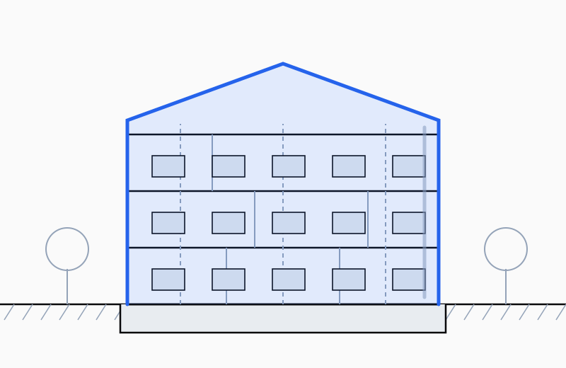
Architectuur Ruimtelijk concept, massa en gevel — van schetsontwerp tot definitief ontwerp. Lees meer -
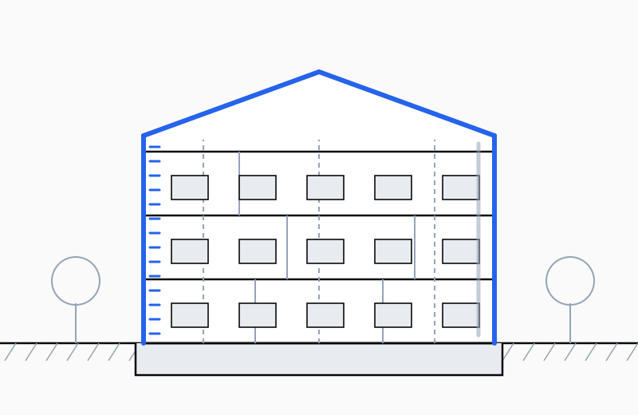
Bouwkunde Technische uitwerking, details en materialisatie tot uitvoerbare tekeningen. Lees meer -
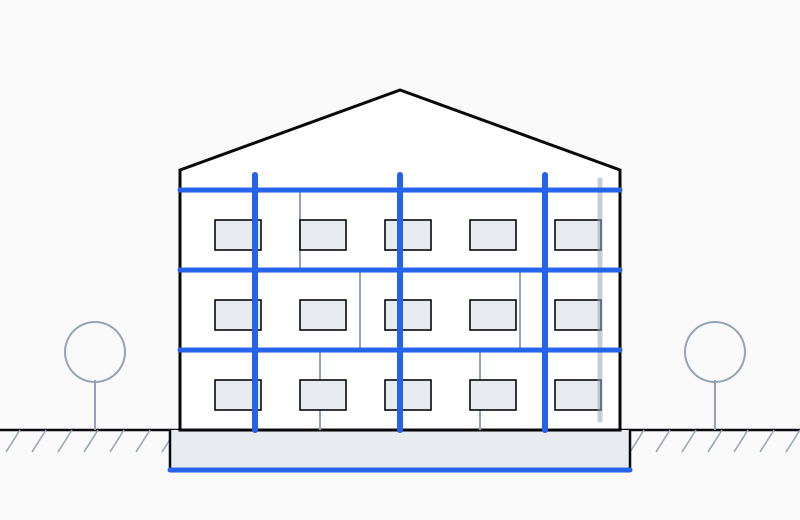
Constructieleer Draagconstructie, krachtsafdracht en fundering, getoetst aan de Eurocode. Lees meer -
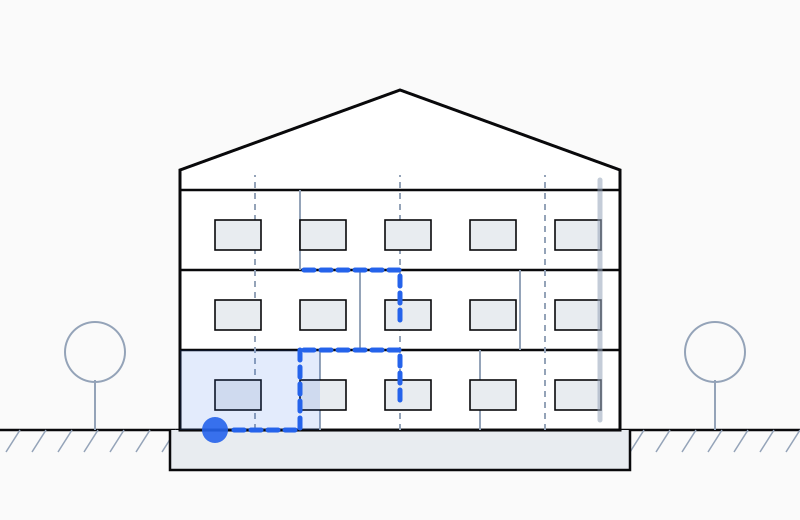
Brandveiligheid Compartimentering, vluchtroutes en WBDBO volgens het Bbl. Lees meer -
 Installatietechniek
Klimaat, ventilatie en elektra — inclusief de ruimte die ze nodig hebben.
Lees meer
Installatietechniek
Klimaat, ventilatie en elektra — inclusief de ruimte die ze nodig hebben.
Lees meer
-
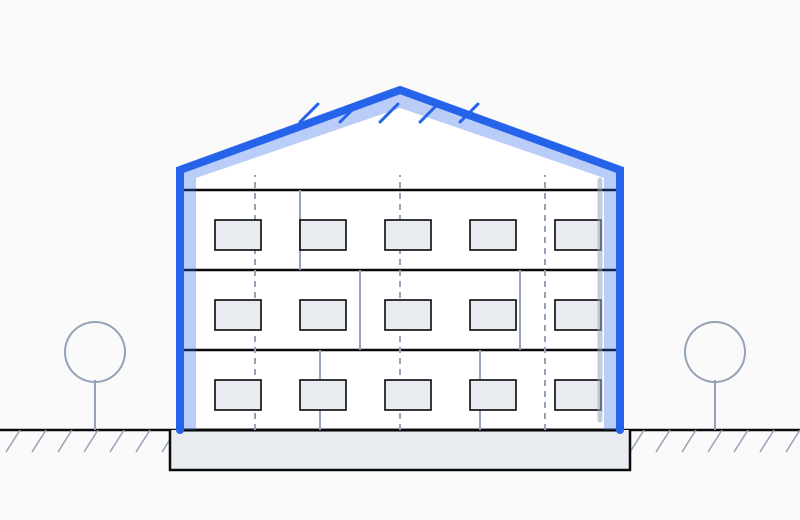
Bouwfysica Isolatie, koudebruggen, geluid, vocht en daglicht. BENG-berekening. Lees meer -
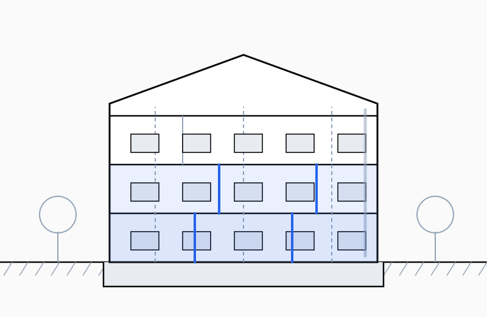
Interieur Indeling, materialisatie, verlichting en maatwerk voor het dagelijks gebruik. Lees meer -
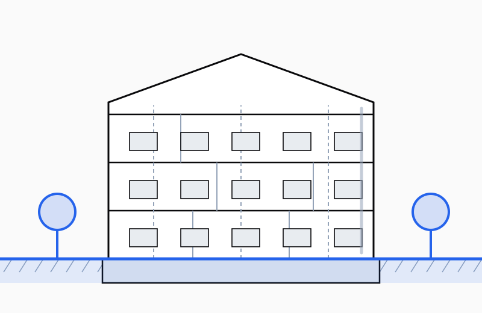
Landschap Terreininrichting, peilen, waterberging en beplanting rond het gebouw. Lees meer -
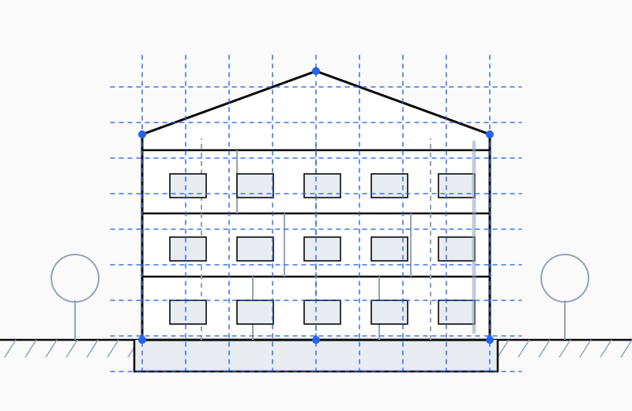
Informatiemodel (BIM) Eén 3D-model als bron voor tekeningen, hoeveelheden en clashcontrole. Lees meer -
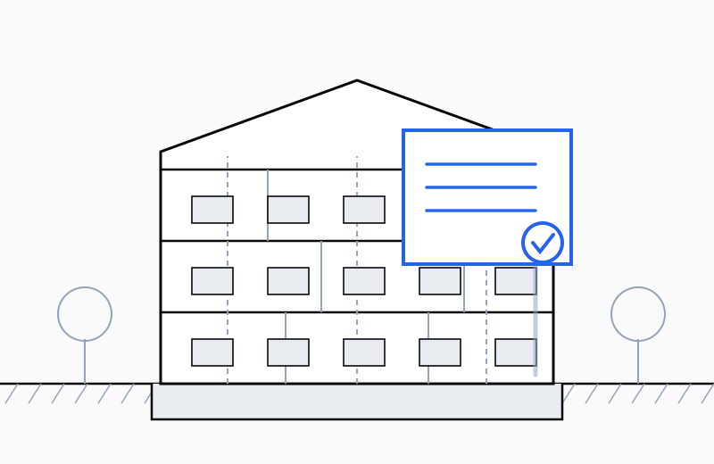
Vergunnen Vooroverleg, toets aan het omgevingsplan en indiening via het Omgevingsloket. Lees meer -
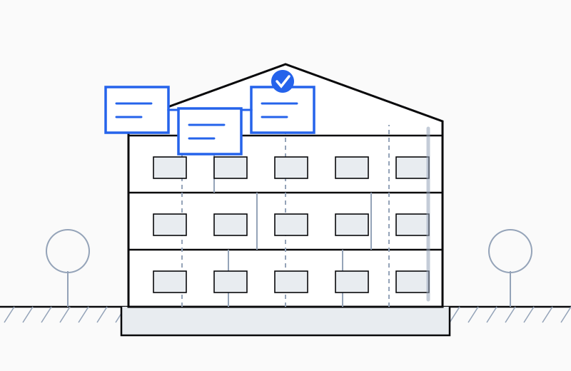
Aanbesteden Bestek, offertes vergelijken op onderdeelniveau en contractvorming. Lees meer -
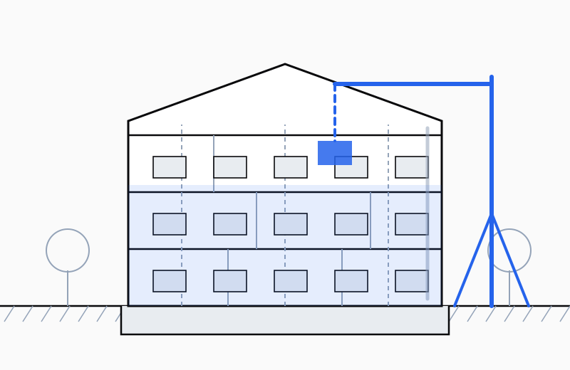
Bouwen Directievoering, toezicht op de bouwplaats en beheersing van meerwerk. Lees meer -
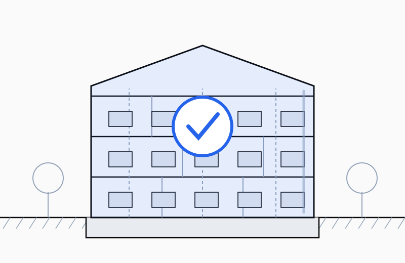
Opleveren Opleverinspectie, restpunten, dossier bevoegd gezag en nazorg. Lees meer
Over de studio
Klein, scherp, betrokken.
MD-ontwerpen werkt direct met opdrachtgevers — zonder tussenlagen. Dat betekent korte lijnen, snelle beslissingen en een ontwerper die het hele traject kent.
Elk project begint met de vraag waarom iets bestaat. Pas daarna komt de vorm. Die volgorde levert werk op dat over vijf jaar nog steeds klopt.
- 12
- Jaar ervaring
- 140+
- Projecten opgeleverd
- 68%
- Terugkerende klanten
Diensten
- Merkidentiteit & logo-ontwerp
- Websites & digitale producten
- Drukwerk & redactioneel ontwerp
- Signage & tentoonstellingsontwerp
Referenties
Wat klanten zeggen
Een greep uit de reacties van opdrachtgevers.
-
[ Vervang dit door een echte quote van een klant ]
[ Naam klant ] [ Functie, Bedrijf ] -
[ Vervang dit door een echte quote van een klant ]
[ Naam klant ] [ Functie, Bedrijf ] -
[ Vervang dit door een echte quote van een klant ]
[ Naam klant ] [ Functie, Bedrijf ]
Contact
Een project in gedachten?
Vertel kort waar het over gaat en wat de planning is. Ik reageer binnen twee werkdagen.
Gevestigd in Nederland — werkzaam in heel Europa.